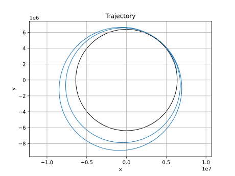

A 2D physics-based rocket simulation using numerical integration to model thrust, drag, gravity, and atmospheric variation with altitude.
This project simulates the flight dynamics of a rocket in two dimensions using Euler integration. The goal is to model how propulsion, aerodynamic drag, and atmospheric conditions influence trajectory and performance over time.
The system evolves using Newton’s second law. At each timestep, forces from thrust, gravity, and drag are computed and integrated to update velocity and position.
Drag is modeled as a velocity-dependent force with increased sensitivity in the transonic regime. Atmospheric density decreases with altitude, reducing drag at higher elevations.
